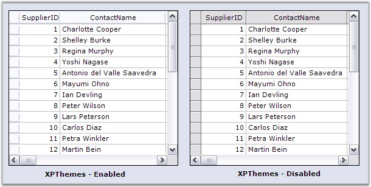
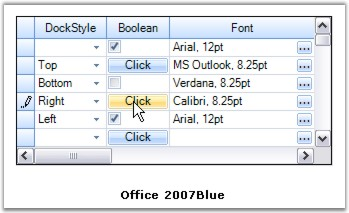
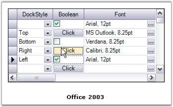
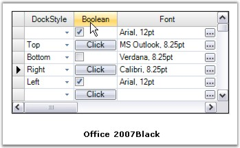
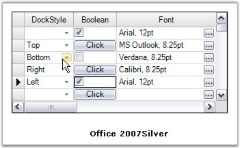
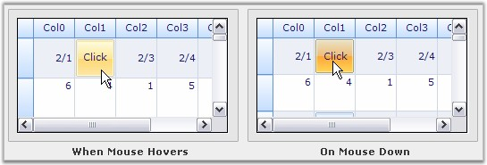
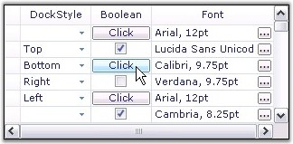

GridGroupingControl implements Themes and VisualStyles that set up a common Look and Feel to all the components in the grid. The term 'Look and Feel' refers not only the way the grid elements appear but also the way they behave in response to the user interactions like hovering mouse over them, clicking, and so on. Grid has in-built support for the following skins: WindowsXP, Office2007 (Blue/Black/Silver) and Office2003.
ThemesEnabled
Grouping Grid enables as well as disables XP themes via ThemesEnabled property. When it is set to true, XP themes are enabled.
|
[C#]
this.gridGroupingControl1.ThemesEnabled = true; |
|
[VB.NET]
Me.gridGroupingControl1.ThemesEnabled = True |

Figure 331: XP Themes for Grid Grouping Control
GridVisualStyles
GridVisualStyles property is used to set different VisualStyles (skins) for grid like Office2007 and Office2003. Every component that is incorporated into the grid will be affected by these visual styles.
GridVisualStyles enumeration defines the skins exposed by the grouping grid. They are Office2003, Office2007Blue,
Office2007Black, Office2007Silver and SystemTheme. Default is SystemTheme.
Visual Styles can be set by assigning a GridVisualStyles enumeration value to the TableOptions.GridVisualStyles property.
|
[C#]
this.gridGroupingControl1.TableOptions.GridVisualStyles = GridVisualStyles.Office2007Blue; |
|
[VB.NET]
Me.gridGroupingControl1.TableOptions.GridVisualStyles = GridVisualStyles.Office2007Blue |

Figure 332: Grid Grouping Control with Office 2007 Blue Visual Style

Figure 333: Grid Grouping Control with Office 2003 Visual Style

Figure 334: Grid Grouping Control with Office 2007 Black Visual Style

Figure 335: Grid Grouping Control with Office 2007 Silver Visual Style
Since visual styles also affect how the cells behave, the cell controls are painted with a different gradient when users interact with them either by clicking or by hovering the mouse over them. Below is the image that exposes these cases.

Figure 336: Highlighting Cells in the Grid when the Mouse Pointer moves or rests over the Cells
Grid Skins
GridSkins, an extension of GridVisualStyles, is built on the idea of providing more advanced themes for your grid, along with the basic themes defined by GridVisualStyles. It is available as an add-on feature in the GridHelperClasses library.
GridSkins depicts the custom skin of GridVisualStyles. Currently it comes with new Vista skin that makes your grid components appear in vista-like look and feel.
Grid Skins can be set by invoking the static method ApplySkin of the GridSkins helper class. This method accepts two parameters, a grid that needs to be styled and a Skins enumeration value that specifies the desired skin, and applies this desired skin to all the grid components.
|
[C#]
GridSkins.ApplySkin(this.gridControl1.Model, Skins.Vista); |
|
[VB.NET]
GridSkins.ApplySkin(Me.gridControl1.Model, Skins.Vista) |
Below image illustrates a sample output.

Figure 337: Grid Grouping Control with Vista Skin